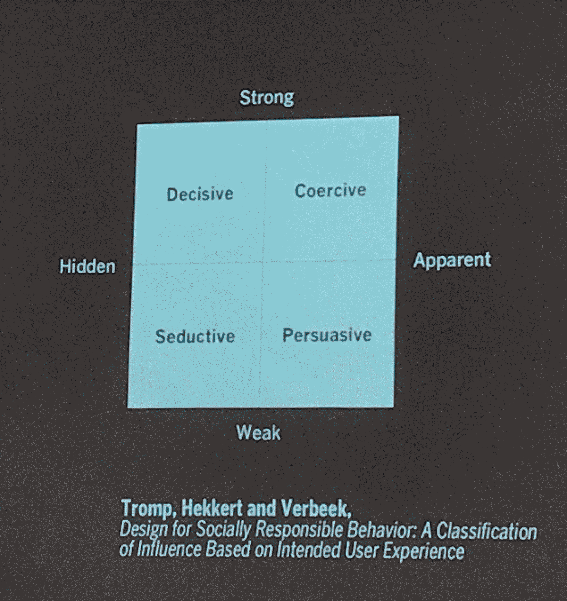

design ethics
¶
🗓 Week 24 + 25 / 21 + 28 april 2023
Design Ethics
with Ariel Guersensvaig and Laura Benítez Valero
Ariel Guersensvaig is from Bueness Aires - grew up in NL (30 years) before coming to Barcelona (past 15 years). He is manily doing research: participatory research currently dealing with migrants and ethics (blsano, UDK, MoMA). Will be releasing a paper on Naturalism (connected to postivism) and its link to AI.
we are talking about the philosophy of technology and our relationship to it. we ask questions whether we are determined by technology or whether we determine it? we are examining the (false?) dichotomy humanity drew between nature and technology. and we argue about the nature of technology and its relationship with humans and the limits and potentialities of ethical reflection. In a second part of this we will be with Laura Benítez Valero talking more about critical transfeminism and how this (can) influence design pracices.
technology and us¶
with Ariel, 21. april
how does technology influence our way of (designing) our life?
Arguments we cover:
-
technology is not different from us. This is not an argument for posthumanism but just emphazises on he connectedness betweeen technology and humanity.
-
technology is not neutral and it does not determine us.
-
designing is a way of doing ethics - for that we need to reconsider what ethics is. It is much more than codes of conduct or rules to follow (design is ethics by other means @verbeek).
what is the technosphere we live in?
“the technological conntext is almost impossible to avoid”. There is a systemic nature to is. biosphere and technosphere are interconncected. “Life has a technological texture” which is dependent on the artefacts (bed, isolatd windows, or hay-roofs..). actually every moment in our lifes, every step that we take is linked to an technological artefact, an object that serves as a tool for you to live your life as you do. “Technology has been generalised to the point of abstraction: it suggests an overarching system that we inhabit” @Murphie&potts
These artefacts are signs of value - what society approves and what society sees as not important @Pierre Bourdieu: taste and class. The dynamics of domesticity depend on cultural place and context. the technological artefacts of places can tell us a lot a about the ethics values in that society (toilet habits around the globe).”Technologies (and the technoosphere) are a materialization of the values (a part of a) soociety upholds.”
Technoliges are the practcal implementations of intelligence.
There are opposied visions of technologgy, two different schools of though when it comes to in how far we are determined by technology or the other way around.
first school
technological neutrality
for technoscience - lots of sciences improved their practices a lot through the integration of advanced technolgies (@ECT scans in brain-research). This school argues that the technolgies themselves do not have free willl and do not act, are mere instruments.
critique: Yet, talking about guns, it is actually these tools, instrument, technologies that codegine a situation. Tools can become an extension (becoming hybrids)yet at the same time can distance you from the actual act. @Guns for example they are extension to your arm and excuse for causing death. @Trolley problem experiment.
so… do artefacts have politics? (1980) there is no neutrality in this. neutrality does not refer to only good versus bad but still do technologies have value, have loading, are changing things. technology does affect its users!
The New Jim Code refers to how AI has all these biases (systemic biases).
this lead to the *second school of thoughts which opposes the position of havning neutrality in technolgy or technological artefacts.
technological determinism:
termed by Thorstein Veblen in 1920s. Inspired by Marx thoughts. technology is the agent of social change who actually changes the behaviour of people.
technology amplifies the transformative capacity of humans. AND transformation is never neutral
neutrality vs. determinism
what both theories forget to consider: we are involved in socio-technical networks of creation, use, modificatiion, regulation and more.
if we design technolgies (and actually every design includes/ is technology, a tool), we have ot consider its affecting context. It seems technologies are note mere isntruments that make our existence easier nor do they fully determine us! rather it is a soft ddeterminism?
how does technology mediate?¶
we need to abandon the cartisian difference between subject and object in order to see the interconnectedness of things and their intermediation. “technoologies co-shape our behavior and our experience of the world = techhnology (actively) participates in our decisions, it creates categories and shapees courses of action.
Therefore, technology has a moral dimension:
we can not make echnlogy responsible for it, thus it is important to analyse what the mediating role of technology is and how design can take over its moral responsibilty.
the mediation of technology is in the perception of artefacts and in the action of humans. In the design process we can reflect on: what are the goals of that technology? what for? for whoso benefit?, how is it designed and with whom?, what is its usage and how?, what are the effect, are they unintended, unexpected, undesired?, what values are we inscribing in the design?, what are the value tensions that emerge?, how are these tensions mitigated?, how are the values materialised into a design?
technologies are a medium for experiencign the world and acting on it. so what is this relation between human and technology if there is no clear seperation? various definitions of this relation:
1 embodiment relation (human-technoolgy) = world e.g. glasses
2 hermeneutic relation human = (technolgy-world) e.g. about perception. you are not reading the world but you read the interpretatino of the word. a la 15 degrees celsium for example vs. 130 fahrenheid… It is about decoding the representatin of the world. we do not engage with the people that make the interpretations but with thhe interpretations
3 alteraty relation human = technlogy(-world) e.g. about action
4 background relation human(-technolgy-world) e.g. about embodiments.The objects themselves are determining the interaction. Pieter paul van beek talks about yet another relation that iis similar to the background yet is more constant
5 cyborg relations (human/technology) = world e.g. about when technology is changing soomething internally. Here, tehcnologies amplify or reduce aspectsss of reality
Multistability @Don Ihde no technology is just one thing but rather ae they multistable. depending on who is watching and with what purpose, the interpretation of the technology will have different effects. e.g. ultraschall babys - disabled baby? abortion?. Here technologies respond to social forces (interpretations). What is stability? the introduction of the washing machine (technology) as created new standards of cleanliness (social forces/ intepretations).
the normative dimension of design¶
with Ariel, 28. april
it is the explicit and implicit norms and functions we subscibe to an object, thing, discourse.
paternalism, what paternalism do we accept? e.g. mandatory helmets for motorcycling in the city… “Design is concerned with how things ought to be” @Herbert Simon, 1996. With this, design does materialize notionos of the good and the right.
forms of innfluence
how can we influence behavior? dutch scientists (@romp, Hekkert and Verbeek) came up wih a classification

desing seeks to influence behavior in a particular direction and is never neutral. @Latour how he speaks about doors and the revovling doors (Drehtüren) as a normative concept of who is wanted in a city, buildings… This makes design ethically (relevant). Do we design for wheelchairs? people with disabilities?
who’s ethics are we talking about? In design we talk about a philsophial inquiery (a philo-inquirey around moral descisions). e.g. ethics vs. moral.
often ethics refers to, tries to answer questions about what is right to do, what is justifiable but soon becomes a questions about what is good. YET what comes first, the rightious or the good?
different (western) approaches to ethics:
1. deontogy ethics of principles (and rules). Linked to biblical convictions till Kant brought up a categorical imperative and a conversation around universalism started. Abut the dignity of persons: how do artificial intelligences discriminating? @Trolley problem: are we killing one person by choice or not taking a choice and kill 5? where is our responsibilty? what is the agency we have? Kantianims: we are letting someone being killed but we do not do anything
critique: Kant was racist and it is difficult to apply this because it is too rationalistics and lacks the importance of situational contextualization.
2. consequentialism ethics of utalitarianism, of effects. @J.S. Mill. The greatest amount of good for the the greatest number.
Critiqur: But, how can we calculate benefiis and harms for different groups? what are the decisions we take? looking at the numerical data does not justify the variety of situations in which decisions have to be taken. social determinism.
3. care ethics ethics of vulnerabiilty and support, theorie of justice, auxiliary theory. The good or bad, right or wrong are to be evaluted in how they support relations. It’s relational ethics, i.e. it involves caring for (one) another.
ALTERNATIVE TO WESTERN PERSPECTIVES:
4. sumak kawsay Quecha for Good living/ buen vivir the subject is not the individual but the social context. Against the cartesian approach of an object but rather focusing oon the individual within a communnity. @Ubuntu. Cudynyas: it doe not require us to go back to a “clean” earth because we can’t. This is equally influences by ondigenus world views as by western critiques of capitalism, feminist thought and environmentalism.
there are more framework but they have trouble inicoorperating technlogies’ mediating role: justice and (human) rights: rawls; arristotle and ne-aristotelians; ther feminis ethics; critical psthumanism.
Objects offerr material answes on the questin of how to act e.g. zebrastreifen. @Madeleine Akrich (and Bruno Latour) about scripts. This is still not complete technologiical determinism because people coshape these technologies (better if so soft determinism). “we become what we behold. we shape our tools and then our tools shape us.” @John Culkin, Marshall McLuhan - our tools and us we are interwined
design, responsibility, and self-enactment - professional ethics¶
Ariels view on design and its ethics
design is two things:
-
the creation of specifications/ plans for an artefact. (making a pdf for a bookcover, a mocup for a model…) - the narrow semses
-
design is about conceiving and reconfiguring ways of living, ways of being, ways of doing. About how we want our whole city to be - a broader sense of design
both are equally important, play into each other
design is furthermore seen with two visions:
- universal design - everyone designs yes
but not everyone
- designs as a prractice, it is not only something we do but it is a practice, an occupation and professional acivity (e.g. interior design…)
so is design a profession? do we want it to be a profession?
personal exkurs me, stella: to me, design is a (re)framnig and polishment of things that are existing, that always existed and that are in making. Designers are give knowledge a shingy coat. Do really think its unnecessary? no because unfortunately it is @Kate’s class. But somehow I do not like, I do no want the word design to rule the worlds we find ourselves in.
often cited when talking about a design-professioin are three things: an extensive training, an intellectual component, and the commitment to a key human good.
for Ariel, the third part is the most important. A professsional should also be a moral project. Really be committed to somehing that is truly important (to the professional). Therefore design as a profession is about what key human goods we want to promote. Design is: “potentialies and capabilities through the conceiving and planning of the human-made world exending others’ possibilites”
yet this entails to practice design responsibly!
from readiness to care to self-enactment. From matters-of-concern to matters-of-care.
interesting references:¶
• silvia rivera cusicanqui: on practices and discouorses of decolonialization
• book: tools for conviviality